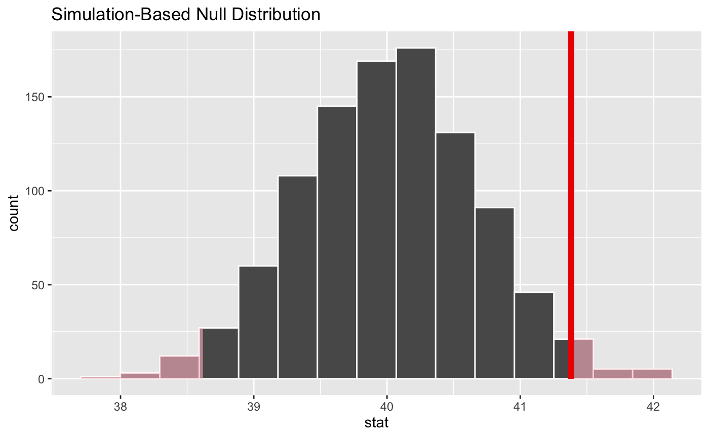

shade_p_value() plots p-value region(s) (using "area under the curve"
approach) on top of the visualize() output. It should be used as
\ggplot2\ layer function (see examples). shade_pvalue() is its alias.
Learn more in vignette("infer").
shade_p_value(obs_stat, direction, color = "red2", fill = "pink", ...) shade_pvalue(obs_stat, direction, color = "red2", fill = "pink", ...)
Arguments
| obs_stat | A numeric value or 1x1 data frame corresponding to what the observed statistic is. |
|---|---|
| direction | A string specifying in which direction the shading should
occur. Options are |
| color | A character or hex string specifying the color of the observed statistic as a vertical line on the plot. |
| fill | A character or hex string specifying the color to shade the
p-value region. If |
| ... | Other arguments passed along to \ggplot2\ functions. |
Value
A list of \ggplot2\ objects to be added to the visualize()
output.
See also
shade_confidence_interval() to add information about confidence
interval.
Examples
# find the point estimate---mean number of hours worked per week point_estimate <- gss %>% specify(response = hours) %>% calculate(stat = "mean") %>% dplyr::pull()#> Warning: Removed 1244 rows containing missing values.# ...and a null distribution null_dist <- gss %>% # ...we're interested in the number of hours worked per week specify(response = hours) %>% # hypothesizing that the mean is 40 hypothesize(null = "point", mu = 40) %>% # generating data points for a null distribution generate(reps = 10000, type = "bootstrap") %>% # finding the null distribution calculate(stat = "mean")#> Warning: Removed 1244 rows containing missing values.# shade the p-value of the point estimate null_dist %>% visualize() + shade_p_value(obs_stat = point_estimate, direction = "two_sided")#> Warning: vignette ‘infer’ not found